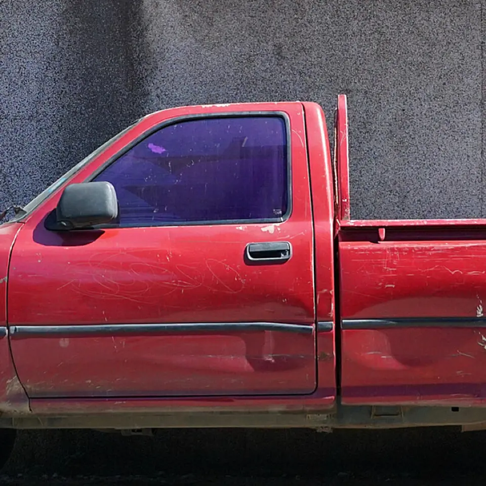

【逆張り】トヨタが巨大車王国に「小さくて遅い」車で殴り込み 発行日時：2026-11-14 05:30:01 JST
NewsPicks原文を読む

あなたに関係ありそうな理由 普通車と違う「低速車両」の制度を使い、農家や大学などに小型トラックを売る構想が分かります。価格も販売目標も未公表のため、狙う顧客と発売後に確かめる点を考える材料になります。
概要 The New York Timesの記事は、トヨタが軽トラックに着想を得た「Scion KEI-01」を米国で発売する計画を伝える。発表されたのは、再始動するScionブランドの3つのモビリティの一つで、KEI-01は記事掲載時点で2027年の発売予定。軽トラが新車で手に入りにくい米国で、既存の大型ピックアップとは異なる用途を探る動きだ。
背景には制度の壁がある。米国では小型軽トラックの愛好家がいる一方、通常は製造から25年以上たった車を輸入して乗る。連邦の安全・排出ガス基準から旧車を除外する規定を利用するためだ。新車を一般の乗用車として売るには規制上の難しさがあり、トヨタは別の車両区分で市場に入る。
KEI-01はインディアナ州で組み立てられ、最高時速25マイル、約40キロの「低速車両」に分類される。制限速度35マイルを超える道路は原則走れず、その代わり通常の自動車と同じ安全基準などは求められない。右ハンドルも含め、一般の移動用トラックとは条件が違う。
想定する使い手は小規模事業者、農家、大学、自治体、愛好家。3気筒エンジンを積み、荷台は三方向に開く。記事は、米国のピックアップが大型化し、製造コストが大きく増えないまま高く売れるため、メーカーにとって高収益になったと説明する。小型車には別の顧客がいるかを試す形だ。
フィアットの低速EVや、スレート、テロ・トラックス、フォードの小型・電動車も競う。トヨタは販売目標と価格をまだ示さず、発売が近づいて公表する。表示コメントでは「必要十分」な小型車に市場があるとの期待や、EVとの競争、走行場所の限定への指摘が出た。記事の事実と、発売後の需要を占う声は分けて見たい。サイオンは2003年、若いミレニアル世代を取り込む実験的なブランドとして始まり、2016年に廃止された。今回の再始動も、新しいモビリティを試すためとトヨタは説明する。記事の質問に対し、同社はトランプ氏の発言への対応ではなく、軽トラックへの幅広い関心に応える機会だと述べた。価格や台数は未発表のままで、販売計画はまだ読み取れない。
発売後に価格や販売目標が公表されれば、どの顧客層をどの規模で取り込むつもりかを測る手掛かりになる。記事の時点では、トヨタが見込む需要の大きさはまだ判断できない。
仕事や会話で使える一言 「誰に何を届けるのかを絞ると、商品に必要な条件も変わりますね。」
中国の若者が逃げ込む「何もしない町」を訪れて 発行日時：2026-11-14 05:20:00 JST
NewsPicks原文を読む
あなたに関係ありそうな理由 若者の休息を個人の気分だけで片づけず、失業率や卒業者数、仕事とのミスマッチを人物の経験とともに読めます。働き方や採用の入り口を考える材料になります。
概要 The Wall Street Journalは、中国・雲南省の大理を、競争の激しい都市生活から距離を置こうとする若者が滞在する町として描く。記事に登場する26歳の元映像制作者は、3年間フルタイムの仕事に就いていない。大理は単に働かない場所というより、雇用の不安や都市での消耗から一度離れる選択肢として紹介される。
別の例では、29歳の若者がオンラインの衣料品販売を続けていたが、消費支出が弱まり、ネット上で服を売ることが難しくなった。北京から移ってきた31歳の男性は、ヴィンテージ衣料の店を開いている。三人の経緯は同じではない。仕事を一時中断した人も、自分なりの商売を始めた人もおり、町に来た理由を一括りにはできない。
背景を示す数字として、記事は学生を除く16〜24歳の都市部失業率が約18％、25〜29歳が約7％、全体が約5％と紹介する。また、当年の大卒者は約1300万人に達する見通しだ。製造業やエンジニア職の需要があっても、専攻や希望、働く場所が合わず、卒業者が求める仕事につながりにくいというミスマッチがある。
記事は、AIが初級の事務職を減らす可能性にも触れる。採用の入り口になる仕事が縮小すれば、経験の浅い若者が技能を身につける道も狭まる。政府は職業訓練や雇用を支える補助策を進めているが、支援があることと、本人が望む仕事に移れることは別だ。失業率だけでは、職の質や将来の見通しを捉えきれない。
表示コメントでは、若者の休息を「怠け」と決めつけず、雇用の質や職種との不一致を見るべきだという声があった。これは読者の解釈で、記事にある人物の経験や統計とは分けて読む必要がある。記事の結びは、多くの人にとって休息は永久の目的ではなく、その後にまた何かをしたいと思うための時間にもなる、という見方を示している。同じ町にいることだけで、若者の選択を一つの傾向とみなすことはできない。記事は、収入、年齢、前職、店を始めたかどうかが異なる人々を紹介し、働き方を見直す理由も一様でないと示す。休息の価値を決めるのは町の名前だけではなく、その後に選べる職や生活があるかどうかだ。
記事は「何もしない町」という呼び方だけでは、滞在する若者の仕事や目的の違いを捉えきれないことも示している。
仕事や会話で使える一言 「本人の意欲だけでなく、経験を積める仕事があるかも見たいですね。」
【舛添要一】トランプとネタニヤフ「同時失速」で勢いづく国 発行日時：2026-11-14 05:30:00 JST
NewsPicks原文を読む
あなたに関係ありそうな理由 イスラエル議会の議席配分や連立の条件を押さえながら、米国の選挙と中東政策を読む舛添要一氏の分析を確認できます。予測と確定した情勢を分けて考える題材です。
概要 NewsPicks編集部による舛添要一氏へのインタビューは、イスラエルの総選挙と米国の中間選挙を起点に、中東情勢の先行きを考える。記事によれば、イスラエルでは10月27日の選挙後も連立交渉が焦点となり、米国では11月3日の中間選挙でトランプ政権を取り巻く議会の力学が変わる可能性がある。以下は主に舛添氏の分析として紹介される。
イスラエル議会クネセトは120議席で、比例代表制を採る。記事が示す選挙結果では、ネタニヤフ氏の陣営が53議席、反ネタニヤフ陣営が67議席。単独過半数を持つ陣営はなく、連立の組み方が政権を左右する。アラブ系政党は19議席を持つが、連立に加わるかどうかは政治的な争点で、単純な議席足し算だけでは決まらない。
組閣を命じられた候補には最長6週間の交渉期間があると記事は説明する。舛添氏は、トランプ氏の政治的な影響力が弱まれば、イスラエル支援を含む米国の政策にも影響し得ると見る。ただし、議会の構成が変わることと、軍事・外交方針がすぐ変わることは同じではない。予算権限や政権の残任期など、制度上の条件も関わる。
インタビューでは、ガザやイランをめぐる戦争、ホルムズ海峡、イランとロシア・中国の関係にも話が及ぶ。記事は、10月に30隻を超える船舶が被害を受けたとの記述を含め、海上輸送と地域紛争の影響を説明する。舛添氏は、米国とイスラエルの指導者が弱まれば、イランなどが動きやすくなる可能性を論じるが、これは将来についての見立てだ。
表示コメントには、日本のエネルギーや貿易への影響を考える声のほか、記事が既報の内容や推測に寄っているとの批評もあった。読者の意見は取材記事の事実と区別したい。選挙後の連立交渉、米議会の政策判断、船舶被害の続報などが、インタビューの予測を検討する材料になる。確定した議席や発言と、舛添氏の見通しを混ぜずに追う記事だ。米国議会が持つ予算権限は、イスラエル支援の規模や戦争を続ける政治的余力に関係する。反対派が議席の多数を得ただけで方針が覆るわけではなく、立法や予算編成の具体的な動きを見る必要がある。選挙時点の議席は確認できる数字だが、連立や議会の判断は今後変化する余地がある。
仕事や会話で使える一言 「議席の数字と、そこから導く予測をいったん分けて見たいですね。」
ご当地キャラともコラボ。コスプレ社長の仕事術とマネジメント論 発行日時：2026-11-14 11:00:10 JST
NewsPicks原文を読む
あなたに関係ありそうな理由 報酬の配分、本人に合わせたフィードバック、失敗時の指示確認など、少人数チームを運営する具体的なやり方が分かります。地域の魅力を衣装や企画に変える仕事にも触れています。
概要 NewsPicks＋d編集部の記事は、コスプレイヤー事務所PPエンタープライズの代表、よきゅーん氏の仕事とマネジメントを取材する。所属するコスプレイヤーは13人で、前編では事業の年商が6億円規模と説明されている。記事の焦点は、人気のあるタレントを抱えることだけではなく、個人が活躍し続けるために会社がどんな関係を築くかだ。
たとえば、拘束期間が長い舞台の仕事では、ギャラの大部分を出演者本人に渡す運用を紹介する。報酬を会社の取り分として固定するのではなく、本人の負担や仕事の性質を踏まえて配分する。記事は、会社とタレントの関係を「人を管理する」側だけのものとせず、会社自身も選ばれる立場にあると説明している。
フィードバックを伝える際は、まず本人に、どのように言われると受け取りやすいかを尋ねる。経営者の考えを正解として押し付けず、選択肢や進路を示して本人が決める余地を残す。失敗が起きたときには、本人を責める前に、経営者側の説明や指示が十分だったかを振り返る。個別対応と、責任の置き方を具体例で示す。
事業はタレント活動だけにとどまらない。京都府城陽市の神社をモチーフにした衣装や、山梨県富士川町のゆずをPRするキャラクター企画を通じ、地域の資源を外から見直し、衣装や表現に落とし込む過程を紹介する。自治体や企業との協業では、地域側が伝えたいものをそのまま掲げるのではなく、コスプレイヤーと制作側の視点で形にする。
記事の終盤では、えなこ氏と築いた成功を一度きりの幸運にせず、再現できる型として整理し、企業とコスプレイヤーをつなぐ構想を語る。表示されたコメントは担当ライターによる紹介が中心で、読者の反応が多い記事ではない。実際にどの施策が成果に結び付いたかを断定せず、報酬、対話、地域連携という運営方法を参考に読む記事だ。記事は、SNSによって個人がファンや作品へ直接発信できるようになり、企業広告、ゲームやアニメの宣伝、メディア出演へ仕事が広がった背景にも触れている。会社はキャスティングや契約を整え、個人だけでは対応しにくい取引を支える。今回のマネジメント論は、その事業基盤を人との関係の面から見せる。
仕事や会話で使える一言 「相手がどう受け取りたいかを先に聞いてから、改善点を伝えます。」
「採用成功」の定義は入社90日後の成果にある…早期離職を防ぐ90日間のオンボーディング設計 発行日時：2026-11-14 06:00:56 JST
NewsPicks原文を読む
あなたに関係ありそうな理由 早期離職の調査と損失試算に加え、入社後90日をどう設計するかを具体策で読めます。人事だけでなく、受け入れる現場の役割や生成AIを使う際の注意を考える材料になります。
概要 Business Journalの記事は、中途採用の成功を入社日で測るのではなく、入社90日後の立ち上がりまで見るべきだと提案する。2025年に291社が回答した調査では、直近3年間に入社半年以内の早期離職があった企業は57％。従業員300〜999人では80％、1000人以上でも73％だった。新卒と中途を分けていない数字だが、入社直後の定着が広く課題になっていると記事は読む。
同記事は、年収600万円の社員が入社6カ月で辞めた場合、採用費や在籍中の給与などから企業損失を約640万円とする別の試算も紹介する。これは特定の前提による見積もりで、すべての退職に当てはまる金額ではない。さらに、社員2502人が回答した調査では、半年以内に辞めた理由として「入社前に聞いていた情報と違った」が最多の38％だったとし、採用時の説明と現場の実態のずれを問題にする。
つまずきの要因として記事が挙げるのは、前職の成功体験、質問しにくさ、期待役割の曖昧さだ。経験者ほど以前の会社の進め方を持ち込み、新しい職場の暗黙のルールと衝突することがある。「即戦力」だからすぐに適応できると受け入れ側が考え、本人が質問を控えたり、成果を急いだりすれば、期待のずれが解消されないまま時間が過ぎる。
対策として示されるのが30・60・90日プレイブックだ。最初の30日は組織の用語や関係者を知り、迷わず質問できる状態を目指す。31〜60日は周囲に伝わる小さな成功を一つ作る。61〜90日は本人とマネジャーができたことや残る課題を確かめ、本来のKPIへ移る。最初の30日に大きな成果を求めないと明示し、90日レビューを査定ではなく期待値のずれを拾う場にする。
現場の育成時間を補う方法として、社内Wikiに用語や過去の経緯を残し、参照元を示す社内Q&Aボットや個別学習計画の下書きに生成AIを使う案もある。一方、面接評価は個人情報なので、利用目的や契約、氏名の扱いを確かめるよう記事は注意する。Googleの社内チェックリストが立ち上がりを約25％早めたという例も、他社へそのまま一般化はできない。コメントには、90日は定着・活躍を測る通過点という意見もあった。
仕事や会話で使える一言 「入社後30日で何を支援し、90日後に何を確かめるか決めておきたいですね。」